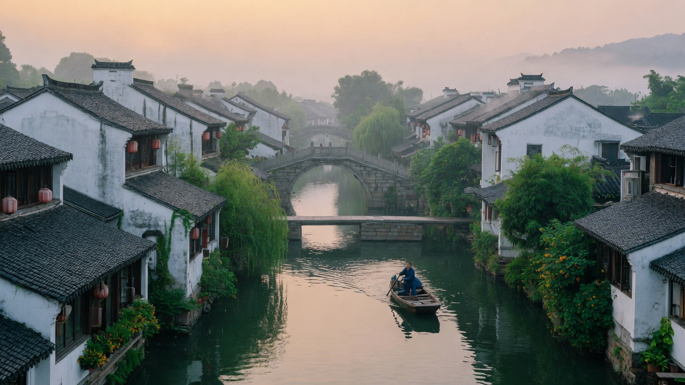
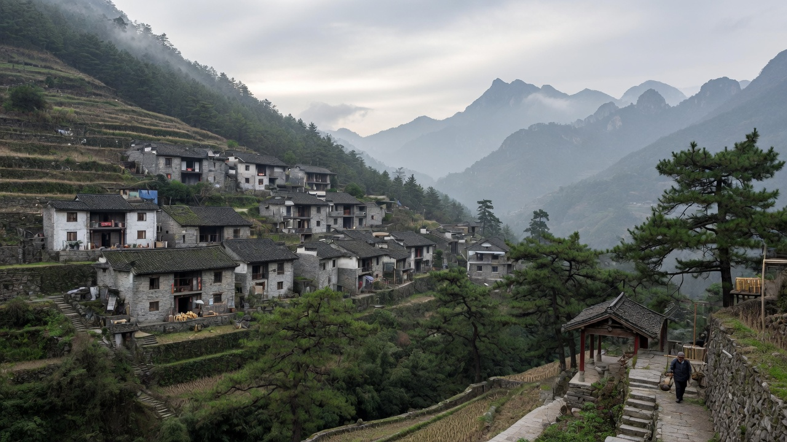
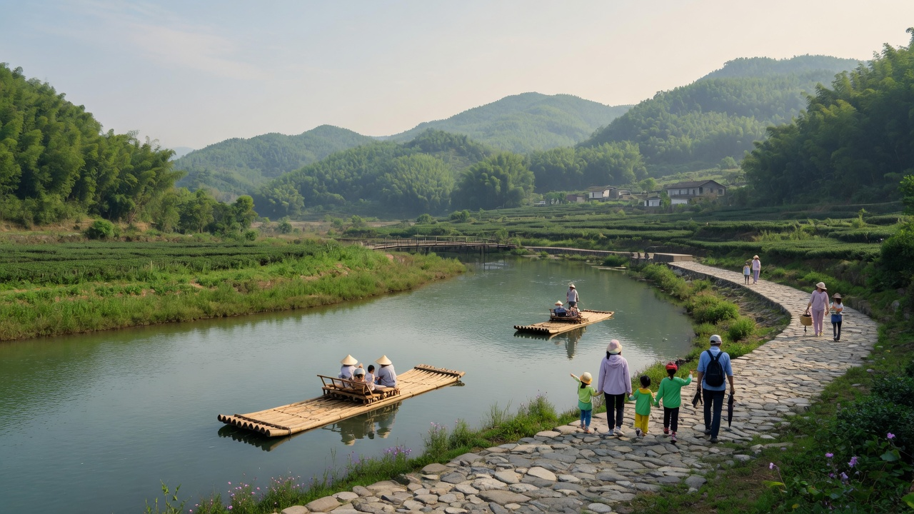
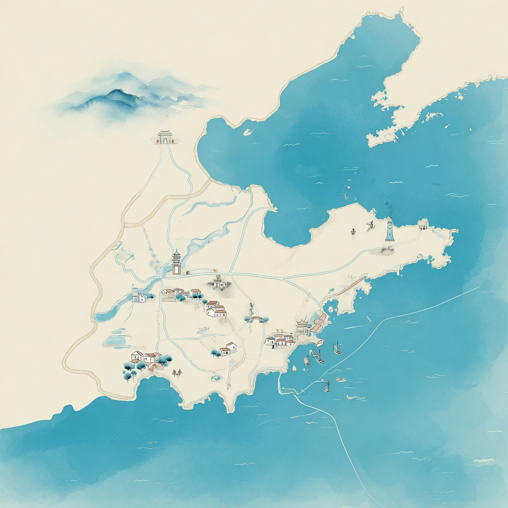

乡旅e模式 · 创新创业实践项目
把乡村短途，收成一条能走的路线。
面向全国乡村旅游场景。按计划天数、兴趣主题与规划风格筛选路线，展开每日安排，并给出餐饮、住宿与参考成本。
- 80%愿意使用 AI 定制行程
- 全国乡村 · 自然 · 文化场景
- 3 维天数 · 主题 · 风格




主题场景
覆盖乡村旅游、自然观光、亲子休闲与文化体验等全国常见短途需求。
- 乡村旅游田园与渔家体验
- 自然观光山水与生态慢行
- 亲子休闲安全可控的研学节奏
- 文化体验古镇非遗与历史遗迹
- 短途旅行1-7 天可执行方案
- 免费规划轻量 Web，本地可演示
三种旅行节奏
自然观光、文化体验、亲子休闲，对应不同兴趣主题与天数组合。
体验
类型环

不是堆攻略，是帮你收敛到可执行方案。
旅游信息分散、路线安排不清晰、每日行程难快速规划，是短途与乡村游常见问题。系统按计划天数、兴趣主题与规划风格筛选，再给出概述、每日安排与参考成本。
-
三维筛选 1-2 / 3-5 / 6-7 天，文化体验到亲子休闲，规划风格分经济、舒适、豪华
-
每日行程 按天展开每日安排，餐饮、住宿建议与参考成本同页呈现
-
关键词搜索 按路线名称模糊匹配，仅搜路线，不搜用户
-
相关推荐 同天数其他路线最多 3 条，方便横向比较后再决定

智能推荐演示
对齐任务书：按计划天数、兴趣主题与规划风格筛选，查看匹配结果示意。
选择条件后点击「智能推荐」，查看示意结果（本地演示，不连后端）。
示例路线
示意数据覆盖江南水乡、西南梯田、华北河谷、徽州山地等类型，检索与推荐均按全国场景设计，不锁单一城市。
路线详情结构
对齐任务书：路线概述、每日安排、餐饮建议、住宿建议与参考成本。
江南水乡古镇非遗日
适用于江南一带水乡古镇：上午水巷，中午老街，下午非遗手作，节奏舒缓、预算可控。
详细行程安排
-
水巷与古桥
沿河道漫步，了解水乡建筑与市井格局。
-
老街午餐
本地面食与河鲜小馆，人均约 40-60 元。
-
非遗手作与市集
走访剪纸、染布等工坊，可选择体验课。
饮食推荐
本帮小菜与河鲜，古镇内老字号面馆。
住宿建议
当日往返；若过夜可选古城客栈或近郊民宿。
费用估算
约 ¥100-180 / 人（不含城际交通）
用户在意什么
来自项目调研摘要，用于说明产品切入点（非实时统计看板）。
适用人群
对齐任务书目标用户：乡村旅游、亲子休闲与短途自然观光。
亲子家庭
需要安全、节奏可控、有教育感的 1-2 日古镇或自然研学行程。
城市短途家庭
周末乡村或自然放松，舒适型规划风格，重视餐饮与住宿建议。
年轻背包客
经济型、可搜索关键词、希望快速得到可执行路线而非长文攻略。
以前要翻十几个笔记，现在选完天数和预算，就能直接看到可走的路线。
使用方式
从注册到查看行程，主路径尽量短。智能推荐、搜索与详情在正式版中需登录。
-
注册登录
用户名唯一，密码哈希存储。登录后顶栏显示欢迎名。
-
选择条件
天数、主题、风格三项提交，规则匹配返回路线列表。
-
查看行程
打开每日安排，对照餐饮、住宿与参考成本。
-
提交反馈
文本入库，用于后续体验改进；Wave 2 可接情感分析。
关键词搜索
按路线名称、主题与区域类型检索全国示意数据，例如水乡、梯田、徽州、亲子，不限定单一城市景点库。
产品节奏
Wave 1 对齐已跑通的规则推荐；AI 对话与电商预订不在当前落地页承诺范围。
Wave 1 · MVP
- 注册 / 登录 / 登出
- 智能推荐与相关推荐
- 关键词搜索与路线详情
- 反馈提交 · 全国主题路线数据
Wave 2 · AI + SEO
- 文心一言对话推荐
- 路线摘要与反馈情感分析
- 语义 URL、sitemap、JSON-LD
Wave 3 · 远景
- 票务住宿特产一站预订
- AR/VR 导览、政府端监管
- 竞赛叙事能力，非近期开发
意见反馈
正式版将文本入库并提示成功。此处为落地页演示，提交后仅本地提示，不会发送到服务器。